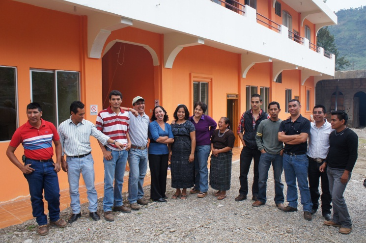

Sustainable agriculture sustains a community in Guatemala
I was really looking forward to this trip to Guatemala. I had been there before on several occasions, and so I knew what to expect in terms of travel, roads, weather and of course, coffee cooperatives. I´ve also been on dozens of due diligence missions during my years at the Bank, traveling all over the region to check in on projects we have funded or are considering funding. But this visit promised to be different. And it sure was.
The trip began with a 12 hour drive from Guatemala City to Santa Cruz de Barillas. We basically crossed over the highest points of Guatemala in the Cuchumatanes Valley, a landscape that reminded me of the highland regions of Peru and Bolivia in its mystery and roughness. Isolated shepherds watching over their lambs, green flowering potato fields, and patches of green and yellow spanning the mountain silhouettes . My colleagues and I had figured we would sleep during the journey, or just sit there in the truck listening to music or watching movies on our iPhones, instead we found ourselves staring out the window at the majestic scenes of this awesome land. And yet this day of unexpectedly spectacular travel through Guatemala was surpassed by the stories of the farmers we met in Huehuetenango, all members of Asobagri, the Coffee Farmer Association of Barillas, a cooperative made up of 1400 small-scale farmers growing excellent “strictly hard bean” coffee – a specialty classification that means it was grown at high altitude. First we met Juan Pedro, a coffee farmer who welcomed us to his home with lunch for 12. Juan was a survivor of a massacre in his community, Puente Alto, which took place amid a period of political unrest and violence in the 1990s. He told us that some 30 people died in one day, and that he and his brother were the only survivors. He described the aftermath, the sense of being alone, lucky, sad and resentful. And then, after relating these powerful memories, he led us to his farm, which he showed to us with great pride, pointing out the methods he uses for fermenting and drying coffee beans and hauling them to the cooperative’s warehouse.
The following day we visited Alonso, who had almost died of diabetes only two months before. He was still recovering, and yet he offered to take us up to his farm at 1300 meters, where he was piloting a compost production tank in order to fertilize his coffee in a more sustainable and organic manner.
I have visited coffee farmers all over Latin America, but these three stories struck a chord in my heart. And what is even more amazing than the individual stories of each of these farmers, was the story of their association, and how they, as a community, had overcome disaster.
We at the MIF and the Inter-American Development Bank provided a first loan to Asobagri in 2008, as part of our Social Entrepreneurship Program. Asobagri used the loan for working capital, to buy coffee from their members, process and export it. They also used it for the construction of a warehouse to store the coffee and prepare it to be sent to Guatemala City for final processing and shipping. Then they approached the Bank for a second loan in May of 2011. At that time our team agreed to hold off on the request until we saw how 2011 finished up for them in terms of revenue and net income. They were already paying back our loan, so it seemed they were doing fine.
And then September came and the rains started to come down. I heard that the country was having an especially severe rainy season, but I paid little attention until October 23, when I received an e-mail message from Floridalma, a colleague based in Guatemala. She told us the terrible news that the Asobagri warehouse financed by our loan had been totally wiped out by a flood. I told our manager that we should not expect to receive the next loan payment on time, and my colleagues and I sent around e-mails seeking support from other agencies and friends who might contribute to help those families who had lost loved ones in the disaster.
A couple of months later, I got word from our Finance department that Asobagri had indeed made their payment—a week ahead of time. I was amazed. Other cooperatives might have used a situation like this to seek out refinancing and a writeoff. Not them. This is a community used to hardship, that refuses to let others down. Their efforts had also been noticed by some of their clients and buyers. Roasters in North America had mobilized to raise funds. An incredible network of people and organizations worked with Asobagri to rebuild after the setback.
By January, Asobagri had leased a warehouse and was back in business. They had lost not only their building, but also their records and computers. But this did not stop them from continuing to buy coffee from their members, and export it to Japan, Canada, and the US. In February I asked to see their year-end financial statements, so I could determine whether they were ready for a second loan. Even after a write down due to the loss, Asobagri had managed to pull out a good season, thanks to rising coffee prices. And so we figured they were ready for a new loan—not refinancing--but a new loan to help them cope with growing demand, and carry out needed rehabilitation and replanting of their coffee bushes.
My routine due diligence visit to Asobagri in fact posed an incredible challenge to my view of the world I live in. What are the daily challenges I face? How do they compare to the struggles and challenges of these people? All my colleagues and I could talk about on our long drive back to Guatemala City was their joyful spirit, their love of life, their thankfulness for our visit, their laughter. The picture below captures this in a way. Juan, Izabela and Alonzo provide the world with some of the best quality coffee there is in Central America. Bird friendly, shade grown, organic certified and most of all, sustainable coffee. Sustainable for the environment, sustainable for their business, and sustainable for Asobagri. To me, these were new friends I had made in Santa Cruz de Barillas, Guatemala.

Alejandro Escobar is the Lead Agribusiness Specialist at the MIF.